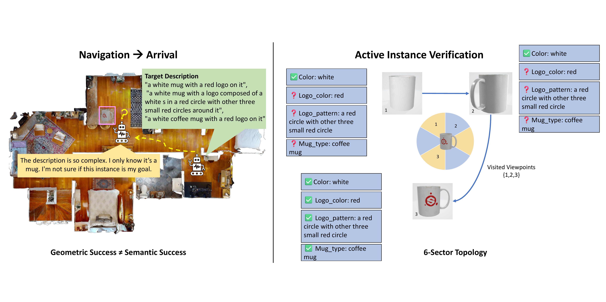
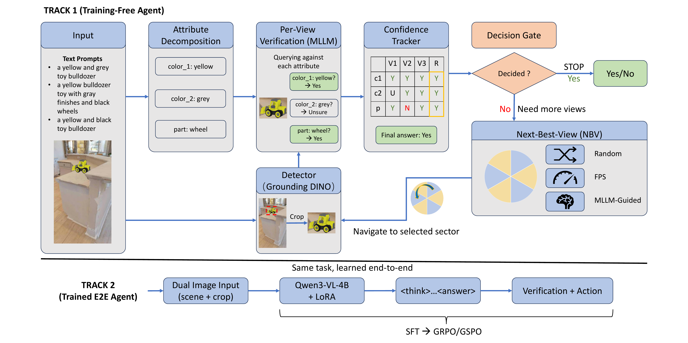
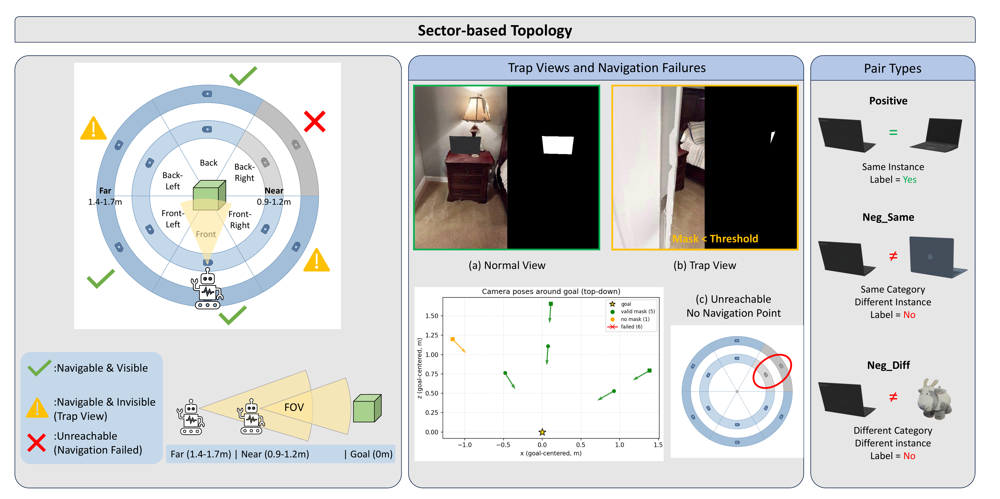
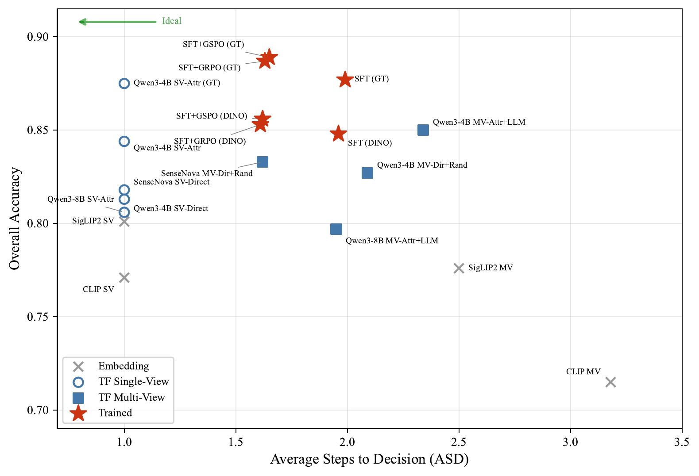

An Offline Embodied Benchmark for
Active Instance Verification (AIV)
University of Trento
FMEA Workshop, CVPR 2026 PosterWe introduce Active Instance Verification (AIV), a task requiring an embodied agent to actively select viewpoints around a candidate object and determine whether it matches a fine-grained natural-language description. We present PInVerify, the first benchmark to isolate post-arrival instance verification as the primary task, with 3,000 evaluation episodes across 18 object categories in a 6-sector navigation topology featuring trap views and unreachable sectors. Our MLLM-based agent framework combines attribute decomposition, per-attribute verification, a confidence-weighted multi-view state tracker, and next-best-view (NBV) selection strategies. Training-free agents using Qwen3-VL achieve up to 85.0% accuracy, while fine-tuned agents (SFT + GSPO) reach 85.6% with 14.9 percentage points higher positive confirmation and halved navigation failure rates. Analysis reveals that how the agent queries (attribute decomposition vs. holistic matching) matters more than where it looks (NBV strategy), and that detection quality is the primary performance bottleneck.

Active Instance Verification (AIV): the agent navigates around a candidate object, selects informative viewpoints,
and determines Match or Mismatch based on language descriptions.

Two-track framework: training-free modular pipeline (top) vs. trained end-to-end agent (bottom).
Break descriptions into individually verifiable sub-problems: color, shape, material, relations. Each attribute is verified independently with Match / Contradictory / Missing states.
Confidence-weighted state tracker accumulates evidence across viewpoints. Conservative philosophy: contradiction must outweigh both match and missing to trigger rejection.
Supervised fine-tuning teaches structured <think> + <answer> format, then Group Sequence Policy Optimization calibrates the stop/continue boundary via reward-based RL.

6-sector navigation topology with three pair types (positive, neg_same, neg_diff), trap views (navigable but target invisible), and unreachable sectors.
18 Object Categories — click to see descriptions
| Method | Det. | Overall | Pos | Neg_Same | Neg_Diff | ASD |
|---|---|---|---|---|---|---|
| Training-Free (Qwen3-VL-4B) | ||||||
| SV-Attr | Grounding DINO | 84.4 | 65.2 | 91.8 | 96.1 | 1.00 |
| SV-Direct | Grounding DINO | 81.3 | 45.7 | 98.4 | 99.9 | 1.00 |
| MV-Attr + LLM NBV | Grounding DINO | 85.0 | 59.6 | 96.5 | 98.8 | 2.34 |
| MV-Direct + Random | Grounding DINO | 82.7 | 49.2 | 99.1 | 99.9 | 2.09 |
| Trained Agents (Qwen3-VL-4B + LoRA) | ||||||
| Base (no fine-tuning) | Grounding DINO | 70.6 | 14.6 | 97.3 | 99.9 | 1.74 |
| SFT | Grounding DINO | 84.8 | 75.9 | 81.4 | 97.1 | 1.96 |
| SFT + GRPO | Grounding DINO | 85.3 | 73.6 | 83.8 | 98.5 | 1.61 |
| SFT + GSPO | Grounding DINO | 85.6 | 74.5 | 83.9 | 98.5 | 1.62 |
| SFT + GSPO | GT | 88.9 | 81.3 | 86.4 | 99.1 | 1.65 |
3,000 episodes (1K per pair type). 95% binomial CI ≈ ±1.3pp at p=0.85. ASD = Average Steps to Decision.
Attribute decomposition outperforms holistic matching by +3.1pp. NBV strategies show minimal differentiation (0.848–0.850).
GT bounding boxes improve accuracy by +2.9 to +3.4pp across all methods. Grounding DINO's miss rate directly caps positive accuracy.
Training-free excels at rejection (Neg_Same 96.5%); trained agents excel at confirmation (Pos +14.9pp). Neither dominates both.
GSPO halves navigation failures (18.2% → 9.1%) and improves efficiency (ASD 1.96 → 1.62) without new visual capabilities.

Efficiency–accuracy trade-off. Trained agents (stars) achieve higher accuracy with fewer observation steps.
Browse real episode visualizations from PInVerify. Each demo shows the agent's step-by-step reasoning.
6-step episode: agent initially uncertain, flips to Match after gathering more views
@misc{jiang2026pinverifyofflineembodiedbenchmark,
title={PInVerify: An Offline Embodied Benchmark
for Active Instance Verification},
author={Yuhang Jiang},
year={2026},
eprint={2605.30639},
archivePrefix={arXiv},
primaryClass={cs.CV},
url={https://arxiv.org/abs/2605.30639},
}